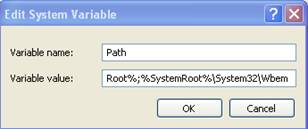

Before installation
1.
If you want install the software in Windows 7 system, please use administrator privilege to execute: Right click setup.exe –> Select [Run as administrator], and start installation .
2.
If you have installed this program before, please uninstall it first, and restart your computer.
3.
It’s better to turn off all the other application before installation, to avoid any conflict in installing procedure.
4.
During the installation, the computer firewall software may prevent the service of this program, please selects “Allow all”, or temporarily stops the firewall software before installation.
5.
Check the system environment variables:
Right click [My computer] on desktop, click Properties - Advanced - Environment Variables, double click the variable [path], show the following interface:

Check if the variable value
[% SystemRoot% \ system32;] is exist, if not, you need to add it manually (This variable is exist by default, but some server administrator maybe delete it for security consideration).
6.
The photograph in this manual may be different from that of the real installation process. The real installation process prevails.